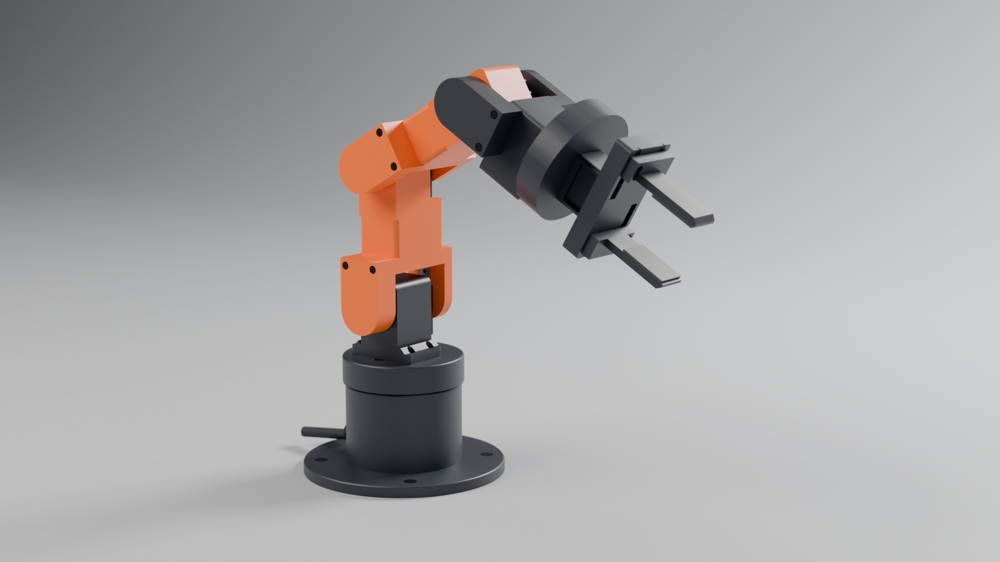
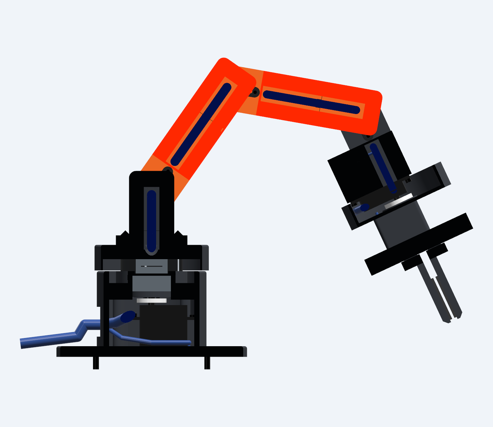
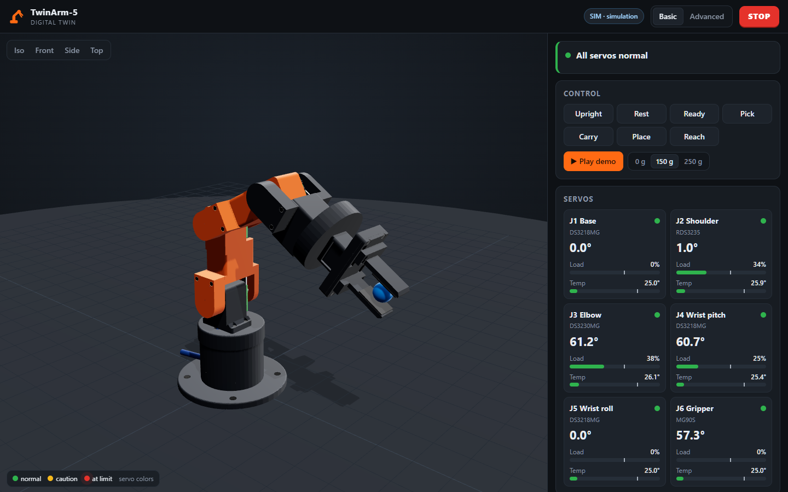

A 3D-printed desktop robot arm with a digital twin

TwinArm-5 is a 5-axis robot arm built from parts available in Turkey, together with its
digital twin on the computer. The twin shows every move of the real arm in real time. It uses
colors to show how hard each motor is working and how hot it is getting, and it warns you before a
motor overheats. When the arm is not connected, the twin runs on its own as a simulation, so a new
motion can be tried on the computer first.
5 + 1joints and a parallel gripper, 6 servos
~400 mmreach from shoulder to tip
250 ggrasp and lift (150 g continuous)
3 sensorsangle, current and temperature on every servo
TwinArm-5 · robot arm with a digital twin1 / 3
How does it work?
The real arm and its twin, side by side
Robot arm6 servos, sensors
→
Control boxESP32, power, emergency stop
→
Computerphysics simulation (MuJoCo)
→
Phone / browserdigital twin screen
Arm → twin: angle · current · temperature (100 times per second)Twin → arm: motion commands
1
Robot arm
The body is 3D printed in PETG and driven by digital servos. In the base, bearings carry the heavy
load, so the servo shaft is not stressed. The cables do not run outside; they pass through
channels inside the arm: through a hollow shaft at the pitch joints and through a closed cable
chamber at the rotating joints.
2
Sensors and control box
Three values are measured for each servo. The angle comes from the servo's own potentiometer,
the current (that is, the load) from an INA226 current sensor, and the temperature from
a DS18B20 next to the servo. The ESP32 sends this data to the computer and passes commands to the
servos. The emergency stop button cuts the power directly.
3
Digital twin
The arm's physics model runs on the computer and can be opened from any phone or computer on the
same network. In Live mode it follows the real arm one to one; if the measured load is higher
than the model expects, it warns of a jam. In Sim mode it runs without the arm. As the servos
work harder and heat up, they turn from green to yellow to red, with warnings such as "65 °C in
4 minutes at this load".

Section: the blue cable harness runs inside the arm and through the joint axes.

Digital twin: 3D arm, poses, demo, and the load and temperature of every servo.
TwinArm-5 · robot arm with a digital twin2 / 3
Key features
Industrial-arm capabilities on a desktop
01
Internal cablingOnly one cable is visible. At the joints the harness passes through a hollow shaft; at the rotating joints it coils in a closed chamber, so it cannot snag or get crushed.
02
Three measurements per servoAngle, current and temperature are read 100 times per second. What the arm is doing and how hard it is working is always known.
03
Sees overheating comingA thermal model calculates how many minutes the motor has before it reaches its limit at the current load, and warns in advance.
04
Jam and collision detectionIf the measured load is clearly higher than the model expects in the same pose, the twin gives a warning at once.
05
Monitoring from a phoneThe digital twin is a web app. It opens on any phone or computer on the same Wi-Fi, and several people can watch at the same time.
06
Basic and Advanced modeBasic mode shows simple cards and poses; Advanced mode adds joint sliders, live charts, power measurement and an event log.
07
Works without the armIn Sim mode the same physics model runs with the torque and speed of the real servos. A new motion is tried on screen first.
08
Parallel gripperA rack-and-pinion gear mechanism opens and closes both fingers together: 2–46 mm opening, rubber pads.
09
Sturdy baseTwo bearings carry the weight of the arm and the tipping force; the base servo only rotates and is not stressed.
10
SafetyThe emergency stop button cuts the servo power directly; the arm only runs again after START is pressed.
Tested on the computer before being built
✓
Physics simulationgrasps up to 250 g, no servo at its limit
✓
Strengtheven the weakest part carries more than 5 times its load
✓
Collision154 parts, no overlap in any pose
✓
Printingall 21 parts can be printed on a 3D printer
DesignParametric CAD, FreeCAD technical drawings, 3D printing (PETG)
SimulationMuJoCo physics model, finite element analysis, thermal model
SoftwareESP32 controller, web-based digital twin (phone + computer)